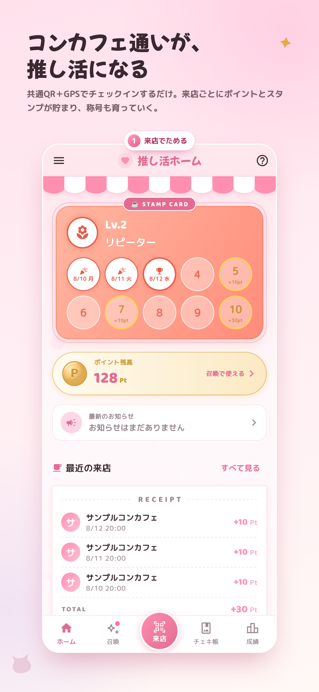
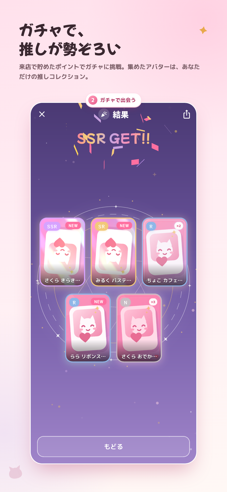
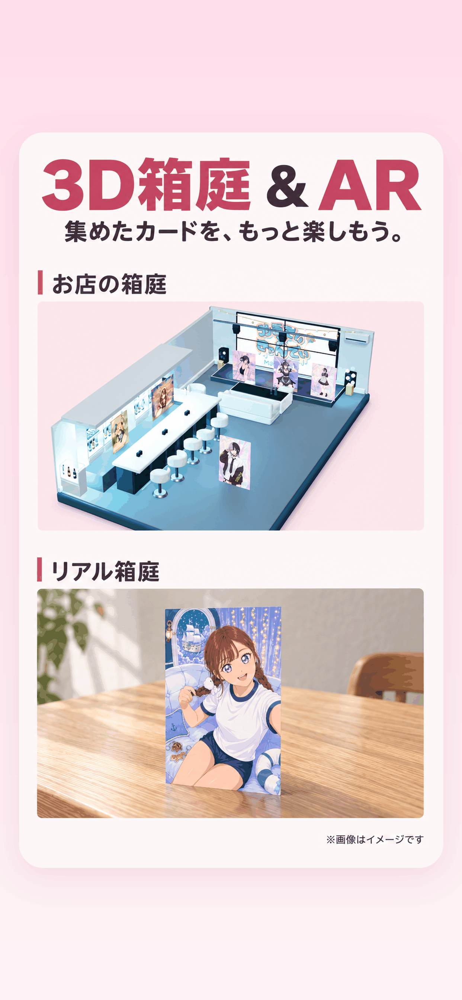
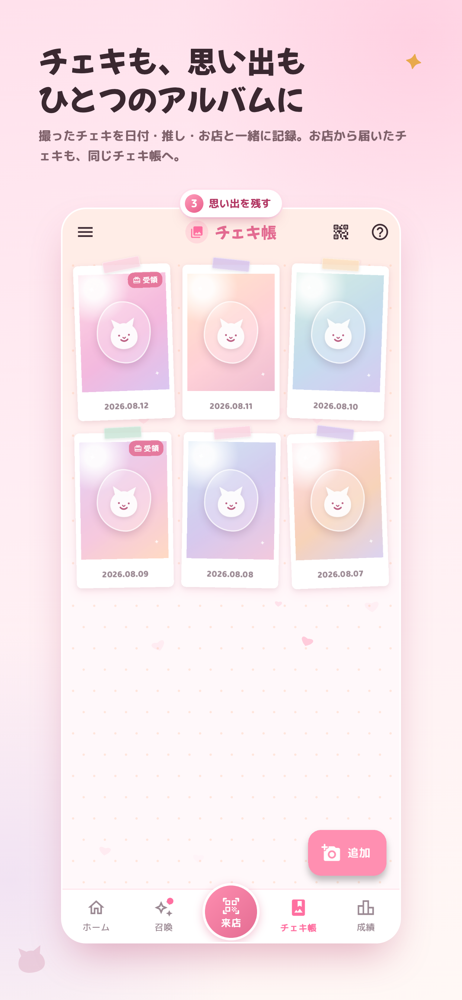
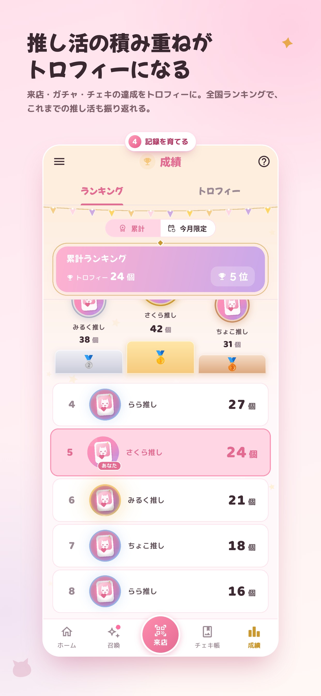
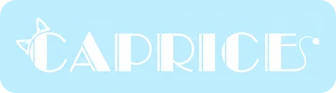

めるてぃきゃんでぃ
Maid&Bar めるてぃ×きゃんでぃ
鳥取県米子市朝日町37
ステージでの歌やダンスも楽しめるメイドバーです。
公式サイト・営業案内 ↗来店するたびスタンプとポイントが貯まり、推しキャストのアバターを集められる無料アプリです。


左右にスワイプして、5つの機能を見られます。
お店のQRコードを読み取ると、スタンプとポイントが貯まります。

ポイントでガチャを引き、推しキャストの衣装違いアバターを集めます。

集めたアバターを、お店を再現した3D空間やARで飾れます。

撮ったチェキをスキャンして、日付やキャストごとに整理。写真は端末内に保存されます。

来店や収集の記録がトロフィーになり、全国ランキングで競えます。
鳥取県米子市の3店舗で使えます。
Maid&Bar めるてぃ×きゃんでぃ
鳥取県米子市朝日町37
ステージでの歌やダンスも楽しめるメイドバーです。
公式サイト・営業案内 ↗Cheers Cruise（チアーズクルーズ／チアクル）
鳥取県米子市茶町14 野川ビル2F
夜のクルーズ船がテーマ。キャストは「クルー」、来店は「乗船」と呼びます。
公式X・乗船案内 ↗
CAPRICE メイドさんのいるお店
鳥取県米子市明治町295
メイドさんとまったり過ごせるお店。「めるてぃきゃんでぃ」の姉妹店です。
公式X・出勤案内 ↗2026年11月時点の情報です。営業時間・料金・出勤情報は、各店舗の公式案内でご確認ください。
iPhoneとAndroidで使えます。アプリのダウンロードは無料です（アプリ内課金あり）。
鳥取県米子市の「めるてぃきゃんでぃ」「CheersCruise」「CAPRICE」で使えます。お店の特徴は対応コンカフェをご覧ください。
「コンセプトカフェ」の略です。メイドや船旅など、お店ごとのテーマに合わせた衣装や内装を楽しめるカフェ・バーです。
無料で使えます。アプリ内には有料の5連ガチャ（1,000円）もあります。
対応店舗への来店を確認し、不正なチェックインを防ぐためです。移動の追跡や広告には使いません。
お使いの端末内です。追加した写真が外部へ送信されることはありません。